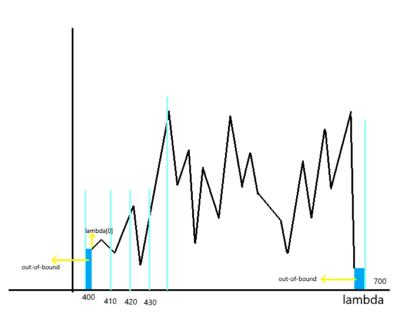
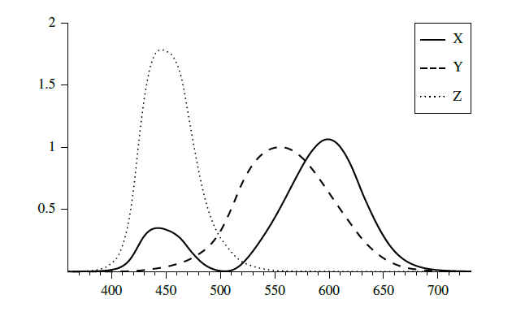
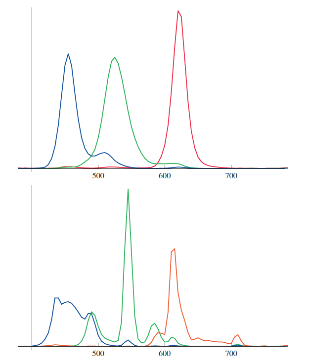
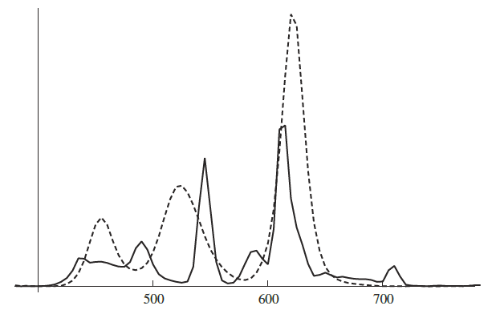

可见光
人眼的可见光波谱范围约为370nm~730nm
光谱表示
SPD(spectral power distribution): 光谱功率分布
SPD是一个关于波长的函数，通常是做法是找到一组基函数，用于将无限维度的SPD映射到低纬度空间表示
1 | template<int nSamples> |
1 | <CoefficientSpecturm protected data> = |
接下来介绍两种常用的表示方法
SampleSpectrum
这种方法是将光谱重新均匀采样来进行拟合
考虑波长为400nm~700nm的可见光，可以将区间分为N段，以30段为例，通常足以拟合比较复杂的光谱数据

1 | <Spectrum Utility Declarations> = |
那么如何从一组光谱数据来构造光谱表示?
假设现在有一组光谱数据$(\lambda_i,v_i)$，表示第$i$个采样点的波长为$\lambda_i$，值为$v_i$,这些采样点往往分布不均匀
对于给定的一组光谱数据，可以构造出相应的折线图
然后将此折线图划分为30个区域，如上图：[400,410) , [410,420)….[690,700)
计算每个区域覆盖的面积和，求其平均值，得到新的采样值
1 | static SampledSpectrum FromSampled(const float* lambda , const float* v , int n) |
1 | <Compute average value of given SPD over ith sample's range>= |
1 | <Spectrum Method Definitions> = |
处理边界条件：数据的波长范围全部处于区间之外，或者原始数据只有一个采样点1
2
3
4<handles case with out-of bounds range or single sample only> =
if(lambdaEnd <= lambda[0]) return lambda[0];
if(lambdaStart >= lambda[n - 1]) return lambda[n - 1];
if(n == 1) return lambda[0];
对于处于数据之外的区域，将其值视为常量,即区域为方形1
2
3
4
5<Add contribute of constant segments before/after samples> =
if(lambdaStart < lambda[0])
sum += vals[0] * (lambda[0] - lambdaStart);
if(lambdaEnd > lambda[n - 1])
sum += vals[n - 1] * (lambdaEnd - lambda[n - 1]);
找到区间起始波长所在的数据段1
2
3<Advance to first relevant wavelength , segment> =
int i = 0;
while(lambdaStart > lambeda[i+1]) ++i;
计算区域覆盖的梯形面积和1
2
3
4
5
6
7
8
9
10
11
12<Loop over wavelength sample segments and add contributes>
Lerp(((w) - lambda[(i)]) / (lambda[(i) + 1] - lambda[(i)]) , vals[(i)] , vals[(i) + 1])
for(; i+1 < n && lambdaEnd >= lambda[i]; i++)
{
float segStart = max(lambdaStart , lambda[i]);
float segEnd = min(lambdaEnd , lambda[i+1]);
sum += SEG_AVG(segStart,segEnd,i) * (segEnd - segStart);
}
经过以上步骤，将光谱数据拟合为线性分段函数，然而，最终我们需要将光谱转化为RGB才能在显示器上显示出来
三色刺激理论认为所有人眼可视的SPD都可以精确的使用三个值$(x_\lambda,y_\lambda,z_\lambda)$表示,公式如下：
$$x_\lambda = \frac{1}{\int Y(\lambda)d\lambda}\int_\lambda S(\lambda)X(\lambda)d\lambda$$
$$y_\lambda = \frac{1}{\int Y(\lambda)d\lambda}\int_\lambda S(\lambda)Y(\lambda)d\lambda$$
$$z_\lambda = \frac{1}{\int Y(\lambda)d\lambda}\int_\lambda S(\lambda)Z(\lambda)d\lambda$$
$X(\lambda),Y(\lambda),Z(\lambda)$为光谱匹配曲线,是由国际照明委员会经过一系列实验制定的.
这三条曲线被认为与人类视网膜的三种感色视椎体细胞响应类似

两个由多种不同波长的光混合而成的光源可以表现出同样的颜色，这叫做“异谱同色”(metamerism)
尽管对于人类观察者而言，XYZ可以很好的表示SPD，然而对于光谱计算并不是一种好的方案
XYZ的乘积与SPD的乘积再计算得到的XYZ相差很大
在SampledSpectrum中，SPD将会被变换重采样进行降维，因此，光谱匹配曲线也需要在重采样到相同维度才能进行运算1
2
3
4
5
6<Spectral Data Declarations> =
static const int nCIESamples = 471;
extern const float CIE_X[nCIESamples];
extern const float CIE_Y[nCIESamples];
extern const float CIE_Z[nCIESamples];
extern const float CIE_lambda[nCIESamples];
CIE_lambda中记录的是每个采样点的波长，这里使用1nm为步长，CIE_X,Y,Z记录从360nm~830nm的光谱匹配曲线采样点
1 | <SampledSpectrum Private Data> = |
由于光谱匹配曲线是固定的，因此使用static变量
XYZ匹配曲线计算放在初始化函数中，当程序启动时进行调用1
2
3
4
5
6<SampledSpectrum Public Methods> +=
static void Init()
{
<Compute XYZ matching functions for SampledSpectrum>
<Compute RGB to spectrum functions for SampledSpectrum>
}
1 | <Compute XYZ matching functions for SampledSpectrum> = |
现在我们有了XYZ匹配曲线的重采样数据，公式可以转化为用黎曼和表示:
$$x_\lambda \approx \frac{1} {\int Y(\lambda)d\lambda} \sum_i X_i c_i$$
$$y_\lambda \approx \frac{1} {\int Y(\lambda)d\lambda} \sum_i Y_i c_i$$
$$z_\lambda \approx \frac{1} {\int Y(\lambda)d\lambda} \sum_i Z_i c_i$$
1 | <SampledSpectrum Public Methods> += |
XYZ中的y与亮度密切相关.1
2
3
4
5
6
7
8
9
10<SampledSpectrum public Methods> +=
float y() const
{
float yy = 0.0f;
for(int i = 0; i < nSpectralSamples; i++)
{
yy += Y.c[i] * c[i];
}
return yy / yInt;
}
现在我们已经将SPD转换为了XYZ,那么如何将XYZ转化为RGB用于显示呢？
当我们将RGB显示在显示器上时，真实显示的光谱主要由三色光谱响应曲线的加权和确定.，由发光材料决定
LED,LCD,以及等离子体的三色光谱响应曲线不同，因此相同的SPD,在这三种情况下显示出来的RGB是不同的.

在LCD,LED显示RGB(0.6,0.3,0.2)的光谱分别如下图所示：

可见SPD相差很大.因此，RGB作为颜色只在知道显示器属性的情况下才是有意义的.
给定一个SPD的$x_{\lambda},y_\lambda,z_\lambda$
在给定显示器的情况下,也就是给定三色光谱响应曲线$$R(\lambda),G(\lambda),B(\lambda)$$
RGB按照如下公式计算所得：
$$
\begin{align}
r = \int R(\lambda)S(\lambda)d\lambda &= \int R(\lambda)(x_\lambda X(\lambda) + y_\lambda Y(\lambda) + z_\lambda Z(\lambda))d\lambda \notag\\
&=x_\lambda \int R(\lambda)X(\lambda)d\lambda + y_\lambda \int R(\lambda)Y(\lambda)d\lambda + z_\lambda \int R(\lambda) Z(\lambda)d\lambda\notag
\end{align}
$$
$$
\begin{bmatrix}
r \\
g \\
b
\end{bmatrix}
=
\begin{bmatrix}
\int R(\lambda)X(\lambda)d\lambda & \int R(\lambda)Y(\lambda)d\lambda & \int R(\lambda)Z(\lambda)d\lambda\\
\int G(\lambda)X(\lambda)d\lambda & \int G(\lambda)Y(\lambda)d\lambda & \int G(\lambda)Z(\lambda)d\lambda \\
\int B(\lambda)X(\lambda)d\lambda & \int B(\lambda)Y(\lambda)d\lambda & \int B(\lambda)Z(\lambda)d\lambda
\end{bmatrix}
\begin{bmatrix}
x_\lambda \\
y_\lambda \\
z_\lambda
\end{bmatrix}
$$
对于高清电视而言：
$$
\begin{bmatrix}
r \\
g \\
b
\end{bmatrix}
=
\begin{bmatrix}
3.240479 & -1.537150 & -0.498535\\
-0.969256 & 1.875991 & 0.041556 \\
0.055648 & -0.204043 & 1.057311
\end{bmatrix}
\begin{bmatrix}
x_\lambda \\
y_\lambda \\
z_\lambda
\end{bmatrix}
$$
计算得到的RGB是在linear space,需要Gamma矫正才能变换到sRGB空间
1 | <Spectrum Utility Declarations> += |
逆矩阵可以将RGB转为XYZ1
2
3
4
5
6
7<Spectrum Utility Declarations> +=
inline void RGBToXYZ(const float rgb[3], float xyz[3])
{
xyz[0] = 0.412453 * rgb[0] + 0.357580 * rgb[1] + 0.180423 * rgb[2];
xyz[1] = 0.212671 * rgb[0] + 0.715160 * rgb[1] + 0.072169 * rgb[2];
xyz[2] = 0.019334 * rgb[0] + 0.119193 * rgb[1] + 0.950227 * rgb[2];
}
因此将SPD转为RGB:1
2
3
4
5
6
7<SampledSpectrum Public Methods> +=
void ToRGB(flaot rgb[3]) const
{
float xyz[3];
ToXYZ(xyz);
XYZToRGB(xyz,rgb);
}
介绍完了如何使用SPD计算RGB，那么如何通过RGB得到SPD?
通过测量得到以下数据1
2
3
4
5
6
7
8
9
10
11
12
13
14
15
16
17
18<Spectrual Data Declaration> +=
static const int nRGB2SpectSamples = 32;
extern const float RGB2SpectLambda[nRGB2SpectSamples];
extern const float RGBRefl2SpectWhite[nRGB2SpectSamples];
extern const float RGBRefl2SpectCyan[nRGB2SpectSamples];
extern const float RGBRefl2SpectMagenta[nRGB2SpectSamples];
extern const float RGBRefl2SpectYellow[nRGB2SpectSamples];
extern const float RGBRefl2SpectRed[nRGB2SpectSamples];
extern const float RGBRefl2SpecGreen[nRGB2SpectSamples];
extern const float RGBRefl2SpectBlue[nRGB2SpectSamples];
extern const float RGBIllum2SpectWhite[nRGB2SpectSamples];
extern const float RGBIllum2SpectCyan[nRGB2SpectSamples];
extern const float RGBIllum2SpectMagenta[nRGB2SpectSamples];
extern const float RGBIllum2SpectYellow[nRGB2SpectSamples];
extern const float RGBIllum2SpectRed[nRGB2SpectSamples];
extern const float RGBIllum2SpectGreen[nRGB2SpectSamples];
extern const float RGBIllum2SpectBlue[nRGB2SpectSamples];
如果RGB颜色用于描述光源的发射光，那么应该使用表示发射源的光谱能量分布的转换表进行计算.
RGBillum2Spect*使用的是D65光谱能量分布，为CIE用于表示正午日光的标准.
用于计算方便，可以将RGBRefl2Spect*,RGBillum2Spect*分布，在初始化阶段重采样为SampledSpectrum1
2
3
4
5
6
7
8
9
10
11
12
13
14
15
16<SampledSpectrum Private Data>
static SampledSpectrum rgbRelf2SpectWhite;
static SampledSpectrum rgbRelf2SpectCyan;
static SampledSpectrum rgbRelf2SpectMagenta;
static SampledSpectrum rgbRelf2SpectYellow;
static SampledSpectrum rgbRelf2SpectRed;
static SampledSpectrum rgbRelf2SpectGreen;
static SampledSpectrum rgbRelf2SpectBlue;
static SampledSpectrum rgbIllum2SpectWhite;
static SampledSpectrum rgbIllum2SpectCyan;
static SampledSpectrum rgbIllum2SpectMagenta;
static SampledSpectrum rgbIllum2SpectYellow;
static SampledSpectrum rgbIllum2SpectRed;
static SampledSpectrum rgbIllum2SpectGreen;
static SampledSpectrum rgbIllum2SpectBlue;
1 | <Compute RGB to spectrum functions for SampledSpectrum> = |
RGB转Spectrum
$$if \quad r < g < b$$
$$(r,g,b) = (r,r,r)+(0,g-r,g-r)+(0,0,b-g)=r(1,1,1)+(g-r)(0,1,1)+(b-g)(0,0,1)$$
$$if \quad r < b < g$$
$$(r,g,b)=(r,r,r)+(0,b-r,b-r)+(0,g-b,0)=r(1,1,1)+(b-r)(0,1,1)+(g-b)(0,1,0)$$
…
(1,1,1):White
(0,1,1):Cyan
(0,0,1):Blue
(0,1,0):Green
1 | <Spectrum Utility Declaration> += |
RGBSpectrum
RGBSpectrum使用R,G,B分量的加权和来表示SPDs
1 | <Spectrum Declarations> += |
FromRGB这个函数就简单了，因此我们存储的就是rgb1
2
3
4
5
6
7
8
9
10
11
12
13
14
15
16<RGBSpectrum Public Methods> +=
static RGBSpectrum FromRGB(const float rgb[3], SpectrumType type = SPECTRUM_REFLECTION)
{
RGBSpectrum s;
s.c[0] = rgb[9];
s.c[1] = rgb[1];
s.c[2] = rgb[2];
return s;
}
<RGBSpectrum Public Methods> +=
void TOrgb(float* rgb) const
{
rgb[0] = c[0];
rgb[1] = c[1];
rgb[2] = c[2];
}
根据SPD计算RGB,通过光谱匹配函数计算XYZ,然后XYZ转为RGB1
2
3
4
5
6
7
8
9
10
11
12
13
14
15
16
17
18
19
20
21
22
23
24
25
26
27
28
29
30
31
32
33
34
35<RGBSpectrum Public Methods> +=
static RGBSpectrum FromSampled(const float* lambda, const float* v, int n)
{
float xyz[3] = {0,0,0};
float yint = 0.0f;
for(int i = 0; i < nCIESamples; i++)
{
yint += CIE_Y[i];
float val = InterpolateSpectrumSamples(lambda, v, n, CIE_lambda[i]);
xyz[0] += val * CIE_X[i];
xyz[1] += val * CIE_Y[i];
xyz[2] += val * CIE_Z[i];
}
xyz[0] /= yint;
xyz[1] /= yint;
xyz[2] /= yint;
return FromXYZ(xyz);
}
<Spectrum Method Definitions> +=
float InterpolateSpectrumSamples(const float* lambda, const float* vals, int n, float l)
{
if(l <= lambda[0]) return vals[0];
if(l >= lambda[n-1]) return vals[n-1];
for(int i=0; i < n-1; i++)
{
if(l >= lambda[i] && l <= lambda[i+1])
{
float t = (l - lambda[i]) / (lambda[i+1] - lambda[i]);
return Lerp(t , vals[i] , vals[i+1]);
}
}
}
LinearSpace RGB to sRGB
$$
\begin{equation}
C_{srgb}=
\begin{cases}
12.92C_{linear} & C_{linear} \leq 0.0031308 \notag\\[2ex]
(1+\alpha)C_{linear}^{\frac{1}{2.4}} - \alpha & C_{linear} > 0.0031308
\end{cases}
\end{equation}
$$